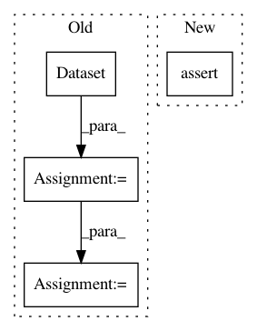

7ffcd4a2a5213c0a7de9fdc3aff4725c166db986,arviz/tests/test_plots.py,,test_plot_ppc_discrete,#Any#Any#,398
Before Change
@pytest.mark.parametrize("animated", [False, True])
def test_plot_ppc_discrete(kind, animated):
data = MagicMock(spec=InferenceData)
observed_data = xr.Dataset({"obs": (["obs_dim_0"], [9, 9])}, coords={"obs_dim_0": [1, 2]})
posterior_predictive = xr.Dataset(
{"obs": (["draw", "chain", "obs_dim_0"], [[[1]], [[1]]])},
coords={"obs_dim_0": [1], "chain": [1], "draw": [1, 2]},
)
data.observed_data = observed_data
data.posterior_predictive = posterior_predictive
axes = plot_ppc(data, kind=kind, animated=animated)
assert axes
After Change
axes = plot_ppc(data, kind=kind, animated=animated, animation_kwargs=animation_kwargs)
if animated:
assert np.all(axes[0])
assert np.all(axes[1])
assert axes
In pattern: SUPERPATTERN
Frequency: 3
Non-data size: 4
Instances
Project Name: arviz-devs/arviz
Commit Name: 7ffcd4a2a5213c0a7de9fdc3aff4725c166db986
Time: 2019-01-27
Author: ahartikainen@users.noreply.github.com
File Name: arviz/tests/test_plots.py
Class Name:
Method Name: test_plot_ppc_discrete
Project Name: tensorlayer/tensorlayer
Commit Name: f2073333b710a340403843763ba60eb1e6699916
Time: 2019-04-11
Author: rundi_wu@pku.edu.cn
File Name: examples/data_process/tutorial_fast_affine_transform.py
Class Name:
Method Name: example3
Project Name: PyMVPA/PyMVPA
Commit Name: 3c1eafeea79d946575ea5b6b5cb02f945897d2fd
Time: 2009-12-10
Author: michael.hanke@gmail.com
File Name: mvpa/tests/test_mapper.py
Class Name:
Method Name: test_flatten